资料分析：平均数、增长与倍数 核心错题 · 共 72 题
【题目编号/题号】 ZL001 (8-11)书本第 8 页
【考点标签】 现期平均数；统计表
【材料】（无文本材料，见题干配图）
【题干】
2025年1~5月，全国新能源乘用车月均销售多少万辆？
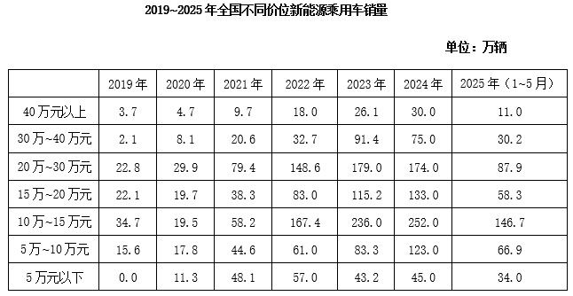
【选项】
A83
B87
C91
D95
听课笔记 / 决策路径：
【题目编号/题号】 ZL002 (9-15)书本第 8 9 页
【考点标签】 一般增长率；统计表
【材料】（无文本材料，见题干配图）
【题干】
以下折线图反映了2020~2023年全国哪一价位新能源乘用车销量同比增速的变化趋势？
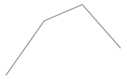
【选项】
A30万~40万元
B20万~30万元
C15万~20万元
D10万~15万元
听课笔记 / 决策路径：
【题目编号/题号】 ZL003 (13-9)书本第 12 13 页
【考点标签】 一般增长率；统计表
【材料】（无文本材料，见题干配图）
【题干】
2023年一季度，大型商业银行总负债比上季度约：
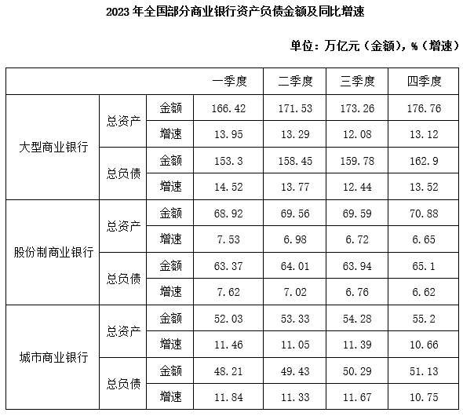
【选项】
A增长了3%
B增长了7%
C减少了3%
D减少了7%
听课笔记 / 决策路径：
【题目编号/题号】 ZL008 (34-10)书本第 33 34 页
【考点标签】 增长量比较；统计表
【材料】（无文本材料，见题干配图）
【题干】
以下柱状图反映了哪一时间段内，中国新增光伏装机规模同比增量的变化趋势（横轴位置代表增量为0）？
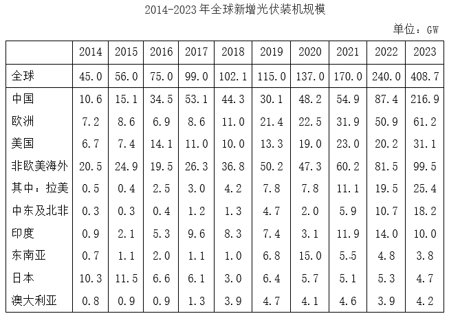
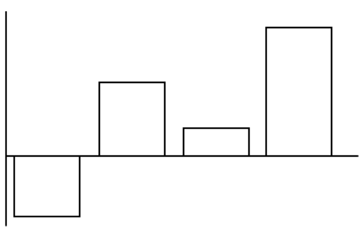
【选项】
A2015-2018年
B2017-2020年
C2018-2021年
D2019-2022年
听课笔记 / 决策路径：
【题目编号/题号】 ZL011 (39-8)书本第 39 40 页
【考点标签】 年均增长率；统计表
【材料】（无文本材料，见题干配图）
【题干】

2019-2021年，珠江口大型底栖生物多样性指数年均增长（ ）。
【选项】
A16.4%
B17.7%
C18.1%
D35.3%
听课笔记 / 决策路径：
【题目编号/题号】 ZL012 (41-11)书本第 40 41 页
【考点标签】 混合增长率；统计表
【材料】（无文本材料，见题干配图）
【题干】

2024年上半年，中国医药保健品进出口贸易顺差（出口额-进口额）比上年同期：
【选项】
A下降了20%以上
B下降了不到20%
C上升了20%以上
D上升了不到20%
听课笔记 / 决策路径：
【题目编号/题号】 ZL016 (47-12)书本第 47 页
【考点标签】 混合增长率；统计表
【材料】（无文本材料，见题干配图）
【题干】

2024年3-11月，全国啤酒当期产量增长率高于累计增长率的有几个？
【选项】
A3
B4
C5
D6
听课笔记 / 决策路径：
【题目编号/题号】 ZL018 (48-15)书本第 47 48 页
【考点标签】 一般增长率；统计表
【材料】（无文本材料，见题干配图）
【题干】
下图为2024年全国白酒或啤酒哪个季度各月当期环比增长率的变化趋势？
【选项】
A白酒、第二季度
B白酒、第三季度
C啤酒、第二季度
D啤酒、第三季度
听课笔记 / 决策路径：
【题目编号/题号】 ZL019 (48-17)书本第 48 页
【考点标签】 混合增长率；统计表
【材料】（无文本材料，见题干配图）
【题干】

2025年1~2月，上海期货交易所成交额同比增速在以下哪个范围内？
【选项】
A不到45%
B超过85%
C45%~65%之间
D65%~85%之间
听课笔记 / 决策路径：
【题目编号/题号】 ZL020 (49-20)书本第 48 49 页
【考点标签】 平均数的增长率；统计表
【材料】（无文本材料，见题干配图）
【题干】
全国期货交易所中，2025年3月平均每手成交额同比增幅和同比降幅最大的分别是：
【选项】
A中国金融期货交易所，广州期货交易所
B中国金融期货交易所，上海国际能源交易中心
C上海期货交易所，广州期货交易所
D上海期货交易所，上海国际能源交易中心
听课笔记 / 决策路径：
【题目编号/题号】 ZL021 (53-9)书本第 52 53 页
【考点标签】 增长量计算；统计图
【材料】（无文本材料，见题干配图）
【题干】
2022年下半年全国保险赔付金额与全国原保险保费收入比值最高的月份，当月保费收入同比约增加了多少亿元？
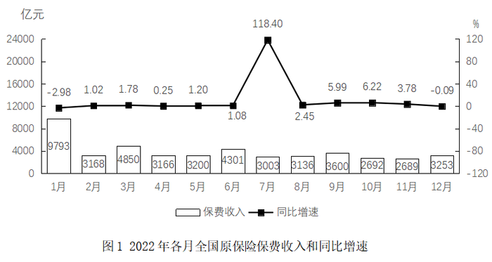
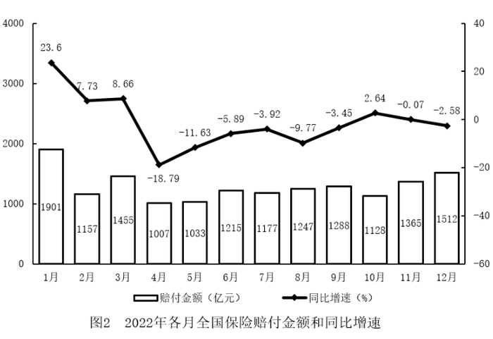
【选项】
A98
B158
C209
D1628
听课笔记 / 决策路径：
【题目编号/题号】 ZL022 (63-18)书本第 62 63 页
【考点标签】 现期倍数；统计图
【材料】（无文本材料，见题干配图）
【题干】


2022年，中国音乐著作权协会平均每名会员的许可收入约是2011年的（ ）倍。
【选项】
A0.9
B2.5
C3.0
D3.5
听课笔记 / 决策路径：
【题目编号/题号】 ZL024 (67-9)书本第 66 67 页
【考点标签】 现期平均数比较；统计图
【材料】（无文本材料，见题干配图）
【题干】
2020年各季度公路货物平均运输距离最高的季度是：
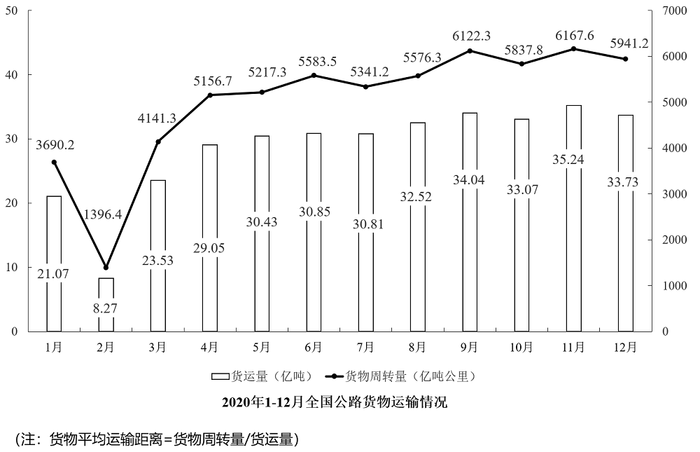
【选项】
A第一季度
B第二季度
C第三季度
D第四季度
听课笔记 / 决策路径：
【题目编号/题号】 ZL025 (68-12)书本第 67 68 页
【考点标签】 现期平均数；统计图
【材料】（无文本材料，见题干配图）
【题干】
已知2011年初～2018年末我国所有开业的海洋主题公园都持续营业，则该期间我国平均约多长时间新开一家海洋主题公园？
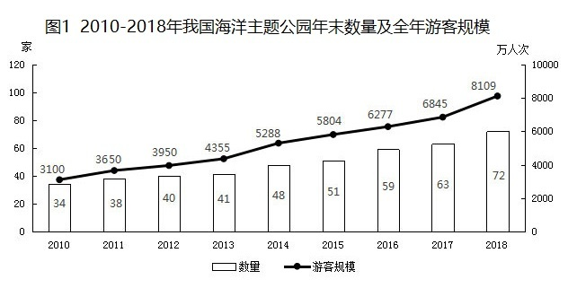
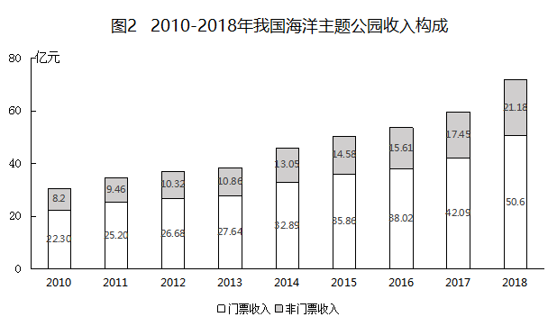
【选项】
A两个半月
B两个月
C三个半月
D三个月
听课笔记 / 决策路径：
【题目编号/题号】 ZL027 (72-10)书本第 71 72 页
【考点标签】 一般增长率；统计图
【材料】（无文本材料，见题干配图）
【题干】

下列地区中，2019年众创空间数量同比增长率最高的是（ ）。
【选项】
A东部地区
B中部地区
C西部地区
D东北地区
听课笔记 / 决策路径：
【题目编号/题号】 ZL030 (80-7)书本第 80 页
【考点标签】 混合增长率；文字资料
【材料】
2023年3月，全国规模以上工业企业的工业机器人完成产量4.4万套，服务机器人完成产量70万套。2023年 1~3月全国规模以上工业企业的工业机器人累计完成产量10.4万套，服务机器人累计完成产量145万套。 2023年3月，我国机器人设备出口金额0.7亿美元，较上年增长110.3%，进口金额2.4亿美元，较上年增长 68.5%。2023年1~3月我国机器人设备累计出口金额1.9亿美元，较上年增长62.1%，累计进口金额6.9亿美元，较 上年增长55.1%。 2022年12月，全国规模以上工业企业的工业机器人完成产量4万套，服务机器人完成产量49.1万套。2022年 1~12月全国规模以上工业企业的工业机器人累计完成产量44.3万套，服务机器人累计完成产量645.8万套。 2022年12月，我国工业机器人设备出口金额0.5亿美元，进口金额1.8亿美元。2022年1~12月我国工业机器 人设备累计出口金额6.1亿美元，累计进口金额20亿美元。
【题干】
2023年一季度，我国机器人设备进出口贸易逆差比上年同期：
【选项】
A下降了不到30%
B下降了30%以上
C上升了不到30%
D上升了30%以上
听课笔记 / 决策路径：
【题目编号/题号】 ZL034 (85-6)书本第 85 页
【考点标签】 间隔增长率；文字资料
【材料】
2022年，全国软件和信息技术服务业规模以上企业超3.5万家，累计完成软件业务收入108126亿元，同比增 长11.2%，增速较上年同期回落6.5个百分点。 2022年，全国软件业利润总额12648亿元，同比增长5.7%，增速较上年同期回落1.9个百分点。软件业务出 口额524.1亿美元，同比增长3.0%，增速较上年同期回落5.8个百分点。其中，软件外包服务出口额同比增长 9.2%。 2022年，东部、中部、西部和东北地区分别完成软件业务收入88663亿元、5390亿元、11574亿元和2499亿 元，分别同比增长10.6%、16.9%、14.3%和8.7%。软件业务收入居前5名的北京、广东、江苏、山东、浙江共完 成收入74537亿元，占比较上年同期提高2.9个百分点。 2022年，全国15个副省级中心城市实现软件业务收入53419亿元，同比增长10.0%，增速较上年同期回落6.3 个百分点；实现利润总额6924亿元，同比增长2.4%，增速较上年同期回落2.1个百分点。
【题干】
2022年，全国软件和信息技术服务业规模以上企业累计完成软件业务收入约比2020年增长了：
【选项】
A16%
B23%
C29%
D31%
听课笔记 / 决策路径：
【题目编号/题号】 ZL041 (102-6)书本第 101 102 页
【考点标签】 一般增长率；文字资料
【材料】
8月份，规模以上工业原煤生产增速回升，煤炭进口保持较高水平；原油生产增速由负转正，进口继续增加； 天然气生产保持较快增长，进口持续高速增长；电力生产加快。 一、原煤生产增速回升，煤炭进口保持较高水平，市场价格小幅波动 8月份，原煤产量3.0亿吨，同比增长4.2%，上月为下降2.0%；日均产量957万吨，环比增加49万吨。1—8月份， 原煤产量22.8亿吨，同比增长3.6%。 8月份，煤炭主产区生产均开始回升。其中，内蒙古同比增长10.0%，上月为下降1.4%；山西同比下降0.9%，降 幅较上月收窄2.2个百分点；陕西同比增长14.0%，增速较上月加快7.6个百分点；新疆同比增长7.1%，上月为下 降5.5%。 8月份，煤炭进口2868万吨，比上月略降33万吨，但仍保持较高水平，同比增长13.5%。1—8月份，煤炭进口2.0 亿吨，同比增长14.7%。 8月底，秦皇岛5500大卡煤炭综合交易价格为573元/吨，比7月底下降3元；5000大卡煤炭价格为510元/吨，比7 月底下降17元；4500大卡煤炭价格为456元/吨，比7月底下降12元。 二、原油生产增速由负转正，进口持续增加 8月份，原油生产1600万吨，同比增长0.2%，上月为下降2.6%，为2015年11月以来首次正增长；日均产量51.6万 吨，环比增加0.5万吨。1—8月份，原油产量12595万吨，同比下降1.8%。 原油进口持续增加，8月份进口原油3838万吨，比上月增加236万吨，同比增长12.9%。1—8月份，进口原油 29919万吨，同比增长6.5%。 国际原油价格震荡上行，截至8月底，布伦特原油现货离岸价格为76.94美元/桶，比7月底上涨2.78美元/桶。 三、原油加工量增速有所放缓 8月份，原油加工量5031万吨，同比增长5.6%，增速比上月回落6.0个百分点；日均加工162.3万吨，环比减少1.4 万吨。1—8月，原油加工量40041万吨，同比增长8.7%。 四、天然气生产保持较快增长，进口持续高速增长 8月份，天然气产量129亿立方米，同比增长9.7%，增速比上月回落0.8个百分点；日均生产4.2亿立方米，与上 月基本持平。1—8月份，天然气产量1040亿立方米，同比增长5.9%。 天然气进口持续高速增长。8月份，进口天然气777万吨（1吨约为1380立方米），比上月增加39万吨，同比增 长37.3%。1—8月份，进口天然气5718万吨，同比增长34.8%。 五、电力生产加快 8月份，发电量6404.9亿千瓦时，同比增长7.3%，增速比上月加快1.6个百分点；日均发电206.6亿千瓦时，再创 新高。1—8月份，发电量同比增长7.7%，比去年同期加快1.2个百分点。 8月份，除风电外，其他品种电力生产同比增速较7月份均有所加快。其中火电同比增长6.0%，比上月加快1.7个 百分点；水电增长11.5%，加快5.5个百分点；核电增长16.9%，加快2.7个百分点；太阳能发电增长12.2%，加快 1.3个百分点。 因台风、降雨等气候因素影响，8月份风电大幅减少，增速比上月回落24.1个百分点，同比增长0.6%。
【题干】
本年度8月份，进口天然气环比增长约：
【选项】
A5.28%
B5.42%
C5.73%
D6.02%
听课笔记 / 决策路径：
【题目编号/题号】 ZL044 (107-9)书本第 107 页
【考点标签】 混合平均数；文字资料
【材料】
2018年国家统计局组织开展了第二次全国时间利用的随机抽样调查，共调查48580人。结果显示，受访居 民在一天的活动中，有酬劳动平均用时4小时24分钟。其中，男性5小时15分钟，女性3小时35分钟；城镇居民3 小时59分钟，农村居民5小时1分钟；工作日4小时50分钟，休息日3小时19分钟。受访居民有酬劳动的参与率为 59.0%，其中城镇居民53.1%。受访居民无酬劳动平均用时2小时42分钟。其中，女性3小时48分钟；农村居民2 小时39分钟；工作日2小时34分钟。受访居民无酬劳动的参与率为70.2%，其中男性55.3%。 无酬劳动包括家务劳动、陪伴照料孩子生活、护送辅导孩子学习、陪伴照料成年家人、购买商品或服务、 看病就医和公益活动。受访居民家务劳动平均用时1小时26分钟，参与率为58.5%。其中，女性2小时6分钟，参 与率75.6%。受访居民陪伴照料孩子生活平均用时36分钟，参与率为18.9%；护送辅导孩子学习平均用时9分 钟，参与率为10.2%；陪伴照料成年家人平均用时8分钟，参与率为5.0%；看病就医平均用时4分钟，参与率为 2.2%；公益活动平均用时3分钟，参与率为4.1%。
【题干】
受访的男性居民约有
【选项】
A2.4万人
B2.6万人
C2.9万人
D3.0万人
听课笔记 / 决策路径：
【题目编号/题号】 ZL045 (109-13)书本第 108 109 页
【考点标签】 现期平均数；文字资料
【材料】
2017年，国内旅游市场高速增长，入出境市场平稳发展，供给侧结构性改革成效明显。国内旅游人数50.01亿人 次，比上年同期增长12.8%；入出境旅游总人数2.7亿人次，增长3.7%；全年实现旅游总收入5.40万亿元，增长 15.1%；全年全国旅游业对GDP的综合贡献为9.13万亿元，占GDP总量的11.04%；旅游直接就业2825万人，旅游 直接和间接就业7990万人，占全国就业总人口的10.28%。 一、全年国内旅游收入增长15.9% 2017年，国内旅游人数50.01亿人次，比上年同期增长12.8%。其中，城镇居民36.77亿人次，增长15.1%；农村 居民13.24亿人次，增长6.8%。国内旅游收入4.57万亿元，增长15.9%。其中，城镇居民花费3.77万亿元，增长 16.8%；农村居民花费0.80万亿元，增长11.8%。 二、全年入境过夜旅游人数增长2.5% 2017年，入境旅游人数13948万人次，比上年同期增长0.8%。其中，外国人2917万人次，增长3.6%；香港同胞 7980万人次，下降1.6%；澳门同胞2465万人次，增长4.9%；台湾同胞587万人次，增长2.5%。入境旅游人数按 照入境方式分，船舶占3.2%，飞机占16.5%，火车占0.8%，汽车占22.2%，其他占57.2%。 2017年，入境过夜旅游人数6074万人次，比上年同期增长2.5%。其中，外国人2248万人次，增长3.8%；香港同 胞2775万人次，增长0.1%；澳门同胞522万人次，增长8.6%；台湾同胞529万人次，增长4.0%。 三、全年国际旅游收入达1234亿美元 2017年，国际旅游收入1234亿美元，比上年同期增长2.9%。其中，外国人在华花费695亿美元，增长4.1%；香 港同胞在内地花费301亿美元，下降1.5%；澳门同胞在内地花费83亿美元，增长8.0%；台湾同胞在大陆花费155 亿美元，增长4.0%。 四、全年入境外国游客亚洲占74.6%，以观光休闲为目的游客占37.1% 2017年，入境外国游客人数4294万人次，亚洲占74.6%，美洲占8.2%，欧洲占13.7%，大洋洲占2.1%，非洲占 1.4%。其中，按照年龄分，14岁以下人数占3.1%，15—24岁占13.2%，25—44岁占49.9%，45—64岁占29.2%， 65岁以上占4.6%；按性别分，男占60.7%，女占39.3%；按目的分，会议/商务占13.3%，观光休闲占37.1%，探 亲访友占2.6%，服务员工占14.8%，其他占32.2%。 2017年，按入境旅游人数排序，我国主要客源市场前17位国家如下：缅甸、越南、韩国、日本、俄罗斯、美 国、蒙古、马来西亚、菲律宾、新加坡、印度、加拿大、泰国、澳大利亚、印度尼西亚、德国、英国。 五、全年中国公民出境旅游人数达13051万人次 2017年，中国公民出境旅游人数13051万人次，比上年同期增长7.0%。
【题干】
2017年，城镇居民平均每人次旅游消费比农村居民约多多少元？
【选项】
A382
B395
C406
D421 截至
听课笔记 / 决策路径：
【题目编号/题号】 ZL047 (117-4)书本第 116 117 页
【考点标签】 文字资料；基期倍数
【材料】
2018年，A省公共财政预算收入1180.07亿元，比上年增长10.7%。其中，一般公共预算收入103.82亿元，比 上年下降19.9%。全年A省实际完成地方税收收入104亿元，中央财政返还68.60亿元，增长1.2%。A省一般公共 预算支出从2012年的603.2亿元增加到2018年的958.41亿元，2018年同比增长8.9%。 2018年末，A省辖区各项存款余额3051.06亿元，同比增长4.4%。其中，个人存款1491.89亿元，增长 17.9%；单位存款1531.38亿元，下降7.6%；代理财政性存款25.38亿元，增长17.9倍。A省辖区各项贷款余额 2574.10亿元，同比增长9.4%。其中，个人贷款311.99亿元，下降2.6%；单位贷款2202.74亿元，增长10.8%；含 票据融资59.38亿元，增长32.9%。 2018年，农行A省分行年末各项本外币存款余额1300.85亿元，同比增长2.7%，比上年同期下降7个百分 点。其中，个人存款645.62亿元，增长8.4%；单位存款653.96亿元，下降1.9%；同业存款1.26亿元，下降 64.5%。年末各项贷款余额662.92亿元，同比增长0.7%，比上年同期下降19个百分点。其中，个人贷款103.52亿 元，增长6.0%；单位贷款484.65亿元，下降6.1%；贸易融资57.59亿元，增长30.8%；贴现及转贴现净值17.16亿 元，增长155.0倍。
【题干】
2017年，农行A省单位贷款额是个人贷款额的（ ）。
【选项】
A3～4倍
B4～5倍
C5～6倍
D6～7倍
听课笔记 / 决策路径：
【题目编号/题号】 ZL050 (118-12)书本第 118 119 页
【考点标签】 文字资料；现期倍数
【材料】
2025年8月，全国电梯采购规模25.11亿元，环比增长7.77%，同比增长43%。 全国电梯采购规模突破千万元的有河北省、湖北省等22个省份，其中，河北省、湖北省和北京市位居全国 电梯采购规模前三，采购规模依次为67006.13万元、33061.49万元和23594.98万元。 8月，全国电梯更新改造采购规模56108.32万元，环比增长51.92%，同比增长347.55%。 8月，全国电梯维保采购规模9650.81万元，环比下降40.06%，同比下降14.11%，主要分布于政府机关、医 疗系统、教育系统、轨道交通等，其中，政府机关电梯维保占全国电梯维保采购市场40.85%。河北省、江苏省 和浙江省电梯维保采购规模排名位列前三，分别为2227.91万元、1662.78万元和1376.29万元。 8月，全国加装电梯采购规模9538.15万元，环比增长30.72%，同比下降18.63%，主要分布于政府机关、医 疗系统、教育系统等，其中，政府机关加装电梯占全国加装电梯采购市场61.17%。四川省、北京市和广东省加 装电梯采购规模排名前三，依次2484.57万元、2459.31万元和939.68万元。
【题干】
2025年8月，全国电梯更新改造采购规模环比增量约是全国加装电梯采购规模环比增量的多少倍？
【选项】
A4.4
B5.9
C7.3
D8.6
听课笔记 / 决策路径：
【题目编号/题号】 ZL051 (120-18)书本第 119 120 页
【考点标签】 增长量比较；文字资料
【材料】
2021年1-2月，全国房地产开发投资13986亿元，同比增长3873亿元，房屋施工面积770629万平方米，同比 增长11.0%。其中，住宅542503万平方米，增长11.2%；办公楼31802万平方米，增长7.3%；商业营业用房76346 万平方米，增长2.5%；其他类型119978万平方米。房屋新开工面积17037万平方米，增长64.3%，其中，住宅 12736万平方米，增长68.5%。商品房销售面积17363万平方米，同比增长1.05倍，比2019年1-2月增长23.3%，商 品房销售额19151亿元，同比增长1.33倍，比2019年同期增长49.6%。 2月末，商品房待售面积比上年末增加2575万平方米，其中，住宅增加2314万平方米，办公楼和商业营业 用房分别减少24万平方米和269万平方米。 2021年1-2月，分地区看，东部地区房地产开发投资8353亿元，同比增长32.4%；中部地区2640亿元，增长 52.5%；西部地区2834亿元，增长45.1%；东北地区158亿元，增长28.6%。 东部地区商品房销售面积7565万平方米，同比增长113.9%；销售额11891亿元，增长148.1%，中部地区商 品房销售面积4369万平方米，增长104.3%；销售额3280亿元，增长130.2%，西部地区商品房销售面积5004万平 方米，增长95.1%；销售额3620亿元，增长103.6%，东北地区商品房销售面积425万平方米，增长82.0%；销售 额359亿元，增长72.7%。
【题干】
2021年1-2月，各地区按商品房销售额同比增量从大到小排列，正确的是（ ）。
【选项】
A中部地区＞东部地区＞东北地区＞西部地区
B东部地区＞西部地区＞中部地区＞东北地区
C中部地区＞西部地区＞东北地区＞东部地区
D东部地区＞中部地区＞西部地区＞东北地区
听课笔记 / 决策路径：
【题目编号/题号】 ZL057 (126-3)书本第 125 126 页
【考点标签】 平均数的增长率；文字资料
【材料】
2018年前三季度，S省社会物流总额35357.26亿元，同比增长6.4%，增速比上半年放缓0.7个百分点。其 中，工业品物流总额16636.15亿元，同比增长0.2%，增速比上半年放缓2.1个百分点；外部流入（含进口）货物 物流总额17357.31亿元，同比增长12.1%，增速比上半年加快0.8个百分点；农产品物流总额875.06亿元，同比增 长11.6%，增速比上半年加快0.5个百分点；单位与居民物品物流总额457.86亿元，同比增长40.7%，增速比上半 年放缓3个百分点；再生资源物流总额30.88亿元，同比下降7.0%，降幅比上半年扩大4.3个百分点。 2018年前三季度，S省物流相关行业实现总收入1912.8亿元，同比增长6.6%。其中：运输环节收入1321.9亿 元，同比增长6.0%；保管环节收入226.2亿元，同比增长6.4%；邮政业收入82.8亿元，同比增长16.7%；配送、 加工、包装业收入98.8亿元，同比增长6.4%。 2018年前三季度，S省社会物流总费用2682.1亿元，同比增长6.3%，比上半年放缓0.9个百分点。其中：物 流运输环节总费用1854.6亿元，同比增长6.3%；保管环节总费用612.4亿元，同比增长6.4%；管理环节总费用 214.9亿元，同比增长6.4%。
【题干】
2018年前三季度，平均每万元社会物流总额产生的物流费用比上年同期：
【选项】
A上升了不到1%
B上升了1%以上
C下降了不到1%
D下降了1%以上
听课笔记 / 决策路径：
【题目编号/题号】 ZL059 (128-8)书本第 127 128 页
【考点标签】 增长量比较；文字资料
【材料】
2024年一季度，全国规模以上文化及相关产业企业（以下简称“文化企业”）实现营业收入31057亿元， 比上年同期增长8.5%；实现利润总额2116亿元；营业收入利润率（ ）为6.81%，同比下降0.17个 百分点。其中，文化新业态特征较为明显的16个行业小类实现营业收入12633亿元。增速快于全部规模以上文 化企业3.4个百分点。 分产业类型看，文化制造业实现营业收入9240亿元，比上年同期增长5.4%；文化批发和零售业5485亿元， 增长6.8%；文化服务业16331亿元，增长10.9%。 分领域看，文化核心领域实现营业收入20921亿元，比上年同期增长10.3%；文化相关领域实现营业收入 10136亿元。 分行业类别看，新闻信息服务实现营业收入4101亿元，比上年同期增长11.1%；内容创作生产7054亿元， 增长12.0%；创意设计服务5219亿元，增长10.4%；文化传播渠道4026亿元，增长6.8%：文化投资运营145亿 元，增长10.4%；文化娱乐休闲服务375亿元，增长10.5%；文化辅助生产和中介服务3583亿元，增长7.3%；文 化装备生产1378亿元，增长6.0%；文化消费终端生产5175亿元，增长2.7%。 分区域看，东部地区实现营业收入24759亿元，比上年同期增长9.2%；中部地区3491亿元，增长6.5%；西部 地区2524亿元，增长4.9%；东北地区282亿元，增长5.0%。
【题干】
将①创意设计服务业、②文化娱乐休闲服务业和③文化辅助生产和中介服务业按2024年一季度实现营业收入同比增量从高到低排序，正确的是：
【选项】
A①>②>③
B①>③>②
C②>③>①
D②>①>③
听课笔记 / 决策路径：
【题目编号/题号】 ZL061 (129-14)书本第 128 129 页
【考点标签】 现期平均数；文字资料
【材料】
2023年全国著作权（包括作品著作权、计算机软件著作权、著作权质权）登记总量达8923901件，同比增 长40.46%，增速比上年同期增加39个百分点。根据各省、自治区、直辖市版权局和中国版权保护中心作品登记 信息统计，2023年全国共完成作品著作权登记6428277件，同比增长42.30%，登记量前五位的分别是：北京市 1101072件，同比增加53802件；山东省873826件，同比增加619459件；福建省710648件，同比增加424814件； 中国版权保护中心493070件，同比增加1476件；上海市412660件，同比增加30660件。从作品类型来看，登记 量最多的是美术作品3296437件，第二是摄影作品2501968件，第三是文字作品329128件，前三类作品类型登记 量占作品著作权登记总量的95.32%，该比例比上年同期增加4.86个百分点。 2023年全国共完成著作权质权登记411件，同比增长17.43%，涉及主债务金额995817.4万元，同比增长 82.82%；涉及担保金额985783.88万元，同比增长80.85%。其中计算机软件著作权质权登记361件，涉及主债务 金额917149.06万元，涉及担保金额907399.56万元；作品（除计算机软件之外）著作权质权登记50件，同比下 降26.47%，涉及主债务金额78668.34万元，同比下降55.13%，涉及担保金额78384.32万元，同比下降55.46%。
【题干】
2023年平均每件计算机软件著作权质权登记涉及主债务金额比作品（除计算机软件之外）著作权质权登记高约：
【选项】
A1135万元
B1056万元
C967万元
D825万元
听课笔记 / 决策路径：
【题目编号/题号】 ZL064 (132-3)书本第 131 132 页
【考点标签】 现期平均数；文字资料
【材料】
2022年，全国共有260家银行机构和29家理财公司累计新发理财产品2.94万只，同比下降38.23%，降幅比上 年同期扩大7.22个百分点；累计募集资金89.62万亿元，同比减少32.57万亿元。 截至2022年底，全国共有278家银行机构和29家理财公司有存续的理财产品，共存续产品3.47万只，同比下 降4.41%；存续规模27.65万亿元，同比下降4.66%。分机构类型来看，理财公司存续产品13947只，存续规模 22.24万亿元，同比增长29.36%。银行机构中，城商行存续产品9064只，存续规模2.45万亿元，同比下降 32.34%；农村金融机构存续产品7808只，存续规模1.09万亿元，同比下降2.63%；股份制银行存续产品1208只， 存续规模0.88万亿元，同比下降82.99%；大型银行存续产品668只，存续规模0.92万亿元，同比下降49.26%；其 他机构存续产品1980只，存续规模0.07万亿元，同比下降13.42%。 截至2022年底，持有理财产品的投资者数量为9671.27万个，较年初增长18.96%，其中机构投资者数量为 95.95万个，数量占比同比提升了0.22个百分点；在持有理财产品的个人投资者中，数量最多的是风险偏好为二 级（稳健型）的投资者，占比35.44%。
【题干】
2022年不同机构每只存续理财产品平均存续金额从大到小排前三名的是：
【选项】
A大型银行、理财公司、城商行
B理财公司、大型银行、城商行
C大型银行、理财公司、股份制银行
D理财公司、大型银行、股份制银行
听课笔记 / 决策路径：
【题目编号/题号】 ZL065 (132-4)书本第 131 132 页
【考点标签】 现期倍数；文字资料
【材料】（材料同上，见本组上一题）
【题干】
以存续规模计算市场份额，2022年理财公司存续理财产品的市场份额是2021年理财公司的多少倍？
【选项】
A0.45
B0.78
C1.36
D1.56
听课笔记 / 决策路径：
【题目编号/题号】 ZL067 (133-7)书本第 132 133 页
【考点标签】 基期倍数；文字资料
【材料】
哨点医院ILI%监测情况 本周哨点医院共报告流感样病例总数为5187例，比上周增加4.49%，比去年同期减少56.16%，其中国家级 哨点医院455例，比上周减少6.57%，比去年同期减少55.04%。城区哨点医院1899例，比上周减少19.40%，比去 年同期减少55.46%；郊区、县（市）哨点医院3288例，比上周增加26.07%，比去年同期减少56.55%。本周全市 哨点医院ILI%为5.98%，比上周低0.07个百分点，其中国家级哨点医院ILI%为2.12%，比上周高0.23个百分点。 城区哨点医院ILI%为4.45%，比上周低0.56个百分点；郊区、县（市）哨点医院ILI%为7.46%，比上周高0.01个 百分点。 （二）哨点医院ILI%纵向比较 2023年第14周全市哨点医院ILI%为5.98%，比2022年同期低7.56个百分点，比2021年同期低0.66个百分点， 其中国家级哨点医院ILI%为2.12%，比2022年同期低3.36个百分点，比2021年同期低4.67个百分点。城区哨点医 院ILI%为4.45%，比2022年同期低6.81个百分点，比2021年同期低2.08个百分点；郊区、县（市）哨点医院ILI% 为7.46%，比2022年同期低7.82个百分点，比2021年同期高0.54个百分点。 （三）各年龄组流感样病例构成情况 2023年第14周各年龄组报告的流感样病例构成情况为：0~4岁组1472例，5~14岁组1103例，15~24岁组406 例，25~59岁组1266例，60岁以上组940例。
【题干】
2023年第13周，H市郊区、县（市）哨点医院报告流感样病例约是城区的多少倍？
【选项】
A1.7
B1.5
C1.3
D1.1
听课笔记 / 决策路径：
【题目编号/题号】 ZL071 (135-14)书本第 134 135 页
【考点标签】 现期平均数；文字资料
【材料】
2019年A市专利密集型产业实现增加值6918.8亿元，比上年增长9.6%，分别高于战略性新兴产业、高技术 产业增加值增速2.3个和1.7个百分点；专利密集型产业增加值占GDP的比重为19.5%，比上年提高0.4个百分点。 2019年专利密集型产业发明专利申请量占专利申请总量的比重为66%，比规模以上重点企业高5.1个百分 点。专利密集型产业每亿元R&D经费产生的发明专利申请量为73.1件，比规模以上重点企业高3.6件；企业户均 拥有有效发明专利15.6件，是规模以上重点企业的2.2倍。从成果转化看，已被成功实施的发明专利数为5.2万 件，占有效发明专利数的58.4%。 在专利密集型产业中，2019年信息通信技术服务业实现营业收入10198.5亿元，增速达41.3%；实现利润 197.6亿元，比上年增长1倍；单位企业实现营业收入12亿元，是专利密集型产业平均水平的3.3倍。 在专利密集型产业中，2019年医药医疗产业营业收入、利润分别增长13.7%和5%；收入利润率达到17%， 高于专利密集型产业平均水平4.1个百分点；单位企业营业收入、利润分别为4.5亿元和0.76亿元。
【题干】
在专利密集型产业中，2019年A市信息通信技术服务业单位企业实现利润额约为多少亿元？
【选项】
A0.18
B0.23
C0.35
D0.59
听课笔记 / 决策路径：
【题目编号/题号】 ZL073 (135-16)书本第 135 页
【考点标签】 间隔增长率；文字资料
【材料】
2021年，全国纺织品服装出口3155亿美元，同比增长8.4%。其中，纺织品出口1452.2亿美元，同比下降 5.6%，较2019年增长22.0%；服装出口1702.8亿美元，同比增长24.0%，较2019年增长16.0%。其中，针织服装 及衣着附件出口864.8亿美元，同比增长39.0%；梭织服装及衣着附件出口701.2亿美元，同比增长12.6%。 2021年，中国对美国、东盟、欧盟和日本的纺织品服装出口合计1724.9亿美元。其中，对美国出口额为 563.5亿美元，同比增长4.0%；向东盟十国出口纺织品服装491.2亿美元，同比增长24.9%；对欧盟27国出口纺织 品服装469.9亿美元，同比下降11.1%；对日本出口纺织品服装200.3亿美元，同比下降7.2%。 2021年，中国向全球出口纺织纱线138亿美元，出口织物667亿美元，分别同比增长41.5%和34.3%。纺织制 品当中，防疫类口罩出口额为129.5亿美元，出口金额、数量同比分别下降76.0%和13.0%。除防疫类口罩外，其 他纺织制品出口额为517.2亿美元，同比增长27.5%。 2021年，中国向“一带一路”沿线国家出口纺织品服装1137.9亿美元，同比增长24.5%，较2019年增长 17.3%；同时，中国自“一带一路”沿线国家进口纺织品服装131.6亿美元，同比增长24.5%。
【题干】
2020年，全国服装出口额比2019年：
【选项】
A增长了10%以上
B下降了10%以上
C增长了不到10%
D下降了不到10%
听课笔记 / 决策路径：
【题目编号/题号】 ZL076 (137-3)书本第 136 137 页
【考点标签】 现期倍数；文字资料
【材料】
2021年上半年，S市工业战略性新兴产业总产值7164.68亿元，比去年同期增长19.6%，两年平均增长 12.3%。其中，新能源汽车、新能源和高端装备产值同比分别增长2.5倍、32.1%和24.5%。 2021年上半年，全市第三产业增加值15080.35亿元，比去年同期增长11.3%。其中，信息传输、软件和信息 技术服务业增加值1770.06亿元，比去年同期增加245.5亿元；批发和零售业增加值2428.92亿元，同比增长 15.2%；金融业增加值3842.65亿元，比去年同期增加274.7亿元；房地产业增加值1812.18亿元，同比增长 13.6%。 2021年上半年，全市社会消费品零售总额9048.44亿元，比去年同期增加了2104.14亿元。分行业看，批发 和零售业零售额8287.13亿元，同比增长28.4%；住宿和餐饮业零售额761.31亿元，同比增长54.0%。2021年上半 年，全市网上商店零售额1485.72亿元，比去年同期增加259.92亿元。 2021年上半年，全市新建商品房销售面积832.83万平方米，比去年同期增长29.2%。其中，新建商品住宅销 售面积667.94万平方米，同比增长23.0%。
【题干】
2021年上半年，S市批发和零售业零售额同比增量约是住宿和餐饮业的多少倍？
【选项】
A3
B5
C7
D9 （四）
听课笔记 / 决策路径：
【题目编号/题号】 ZL083 (145-17)书本第 144 145 页
【考点标签】 现期平均数；文字资料
【材料】
2022年，深圳全市绿化覆盖总面积达到101385.6公顷，比上年增长513.4公顷；其中建成区绿化覆盖面积 41457.5公顷，比上年增长345.2公顷；建成区绿化覆盖率43.09%，比上年增长0.09个百分点；全市绿地面积 98270.2公顷，比上年增长1.45%；其中建成区绿地面积36613.1公顷，比上年增长3.30%；建成区绿地率比上年 增长0.98个百分点；全市公园绿地面积22219.0公顷，比上年增长222.5公顷，按常住人口计算人均公园绿地面积 比上年增长1.13%。 2022年全市公园已达到1260个，公园总面积38209.9公顷，分别是2003年的8.6倍和5.6倍；全市公园中，有 自然公园37个，比上年增加4个；城市公园191个，比上年增加4个；社区公园1032个，比上年增加14个。三级 公园体系的建成，基本实现了市民出门500米可达社区公园，2公里可达城市综合圈，5公里可达自然公园的目 标。全市公园绿化活动场地服务半径覆盖的居住用地面积达到21018.2公顷，较上年增长280.8公顷，公园绿化 活动场地服务半径覆盖率达到90.87%，与上年持平。 2022年，全市绿道长度3119公里，比上年增长9.70%，增速较上年收窄5.78个百分点，万人拥有绿道长度 1.77公里，比上年增长9.94%；绿道密度（全市绿道长度与全市面积之比）1.56公里/平方公里，居广东省首位。 深圳市建成区绿化覆盖率、公园绿化活动场地服务半径覆盖率、万人拥有绿道长度3项指标已达到国家生态园 林城市标准。
【题干】
2022年，深圳市每万人拥有公园绿地面积约为（ ）公顷。
【选项】
A11.6
B12.1
C12.6
D无法判断
听课笔记 / 决策路径：
【题目编号/题号】 ZL084 (146-3)书本第 145 146 页
【考点标签】 基期平均数；文字资料
【材料】
2023年三季度，支付系统共处理支付业务3358.88亿笔，金额3151.37万亿元，同比分别增长12.59%和 6.97%。 三季度，人民银行清算总中心系统共处理支付业务54.79亿笔，金额2379.52万亿元，同比分别增长0.92%和 9.53%，其中，大额实时支付系统处理业务9518.17万笔，同比下降10.39%，金额2254.07万亿元，同比增长 9.72%；小额批量支付系统处理业务11.51亿笔，金额46.69万亿元，同比分别增长5.73%和10.03%；网上支付跨 行清算系统处理业务42.31亿笔，同比下降0.03%，金额74.66万亿元，同比增长5.38%；境内外币支付系统处理 业务134.46万笔，同比增长2.83%，金额5707.35亿美元，同比下降14.63%。 在其他支付系统中，银行行内业务系统三季度处理业务54.42亿笔，同比增长11.14%，金额539.56万亿元， 同比下降4.10%；银联跨行支付系统处理业务837.93亿笔，金额70.27万亿元，同比分别增长21.37%和8.70%；城 银清算支付清算系统处理业务1056.40万笔，金额9744.45亿元，同比分别增长34.61%和36.31%；农信银支付清 算系统处理业务7.41亿笔，金额7162.13亿元，同比分别下降39.98%和13.55%；人民币跨境支付系统处理业务 176.43万笔，金额33.42万亿元，同比分别增长43.23%和31.41%；网联清算平台处理业务2404.21亿笔，金额 126.92万亿元，同比分别增长10.42%和6.28%。
【题干】
2022年三季度，人民银行清算总中心系统境内外币支付系统处理业务日均处理金额在以下哪个范围内？
【选项】
A超过80亿美元
B70亿-80亿美元之间
C60亿-70亿美元之间
D不到60亿美元
听课笔记 / 决策路径：
【题目编号/题号】 ZL085 (146-4)书本第 145 146 页
【考点标签】 平均数的增长率；文字资料
【材料】（材料同上，见本组上一题）
【题干】
将其他支付系统中①银行行内业务系统、②银联跨行支付系统、③城银清算支付清算系统和④农信银支付清算系统按2023年三季度平均每笔业务金额同比增速从高到低排列，以下正确的是：
【选项】
A①②③④
B③②①④
C④③②①
D④①②③
听课笔记 / 决策路径：
【题目编号/题号】 ZL086 (147-6)书本第 147 页
【考点标签】 现期平均数；文字资料
【材料】
2020年1-2月，我国境内投资者共对全球147个国家和地区的1733家境外企业进行了非金融类直接投资，累 计实现投资1078.6亿元人民币，同比增长1.8%。对外承包工程完成营业额1080亿元人民币，同比下降9.5%，新 签合同额2150.3亿元人民币，同比增长38.3%。对外劳务合作派出各类劳务人员3.9万人，同比减少2.9万人，2月 末在外各类劳务人员77.8万人。 2020年1-2月，我国对外投资合作主要呈现以下特点： 一是对“一带一路”投资合作增幅较大。2020年1-2月，我国企业对“一带一路”沿线的48个国家有新增 投资，合计27.2亿美元，同比增长18.3%。在“一带一路”沿线的59个国家新签对外承包工程合同额153.6亿美 元，同比增长25.6%，完成营业额91.4亿美元。 二是对外投资结构持续多元。2020年1-2月，对外投资主要流向租赁和商务服务业、批发和零售业、制造 业和采矿业等传统投资领域，占对境外企业非金融类直接投资的比重分别为40.8%、15.1%、11.3%和8.9%。其 中流向租赁和商务服务业的投资额同比增长43.2%，成为增速最高的领域。 三是对外承包工程新签大项目增多。2020年1-2月，对外承包工程新签合同额在5000万美元以上的项目有 115个，较去年同期增加29个，占新签合同总额的83.9%。
【题干】
2020年1-2月，我国境内投资者对每个当期内产生非金融类直接投资的境外企业的非金融类直接投资额均值约为多少亿元人民币？
【选项】
A1.6
B1.3
C0.8
D0.6
听课笔记 / 决策路径：
【题目编号/题号】 ZL087 (147-7)书本第 147 页
【考点标签】 基期平均数；文字资料
【材料】（材料同上，见本组上一题）
【题干】
2019年1-2月，我国对外承包工程月均完成营业额比月均新签合同额：
【选项】
A高不到300亿元人民币
B高300亿元人民币以上
C低不到300亿元人民币
D低300亿元人民币以上
听课笔记 / 决策路径：
【题目编号/题号】 ZL089 (147-9)书本第 147 148 页
【考点标签】 现期平均数计算；文字资料
【材料】（材料同上，见本组上一题）
【题干】
如2020年1-2月人民币与美元的汇率稳定为7元人民币兑换1美元，则同期对外承包工程新签合同额在5000万美元以上的项目的平均新签合同额在以下哪个范围内？
【选项】
A2亿美元以上
B1.5-2亿美元之间
C1-1.5亿美元之间
D0.5-1亿美元之间
听课笔记 / 决策路径：
【题目编号/题号】 ZL092 (150-20)书本第 149 150 页
【考点标签】 平均数与增长量比较；综合资料
【材料】
2025年清明假期3天，Y省接待游客2110.5万人次，同比增长6.4%；实现旅游收入107.8亿元，同比增长 8.7%。全省4A级及以上景区接待游客657.5万人次，同比增长7.4%；纳入监测的13家红色旅游经典景区接待游 客54.7万人次，同比增长5.1%。 2025年“五一”假期5天，Y省接待游客4608.2万人次，同比增长18.7%；实现旅游收入295亿元，同比增长 20.3%。全省4A级及以上景区接待游客1629.9万人次，同比增长14.3%；纳入监测的13家红色旅游经典景区接待 游客119.5万人次，同比增长12.0%。 2025年端午假期3天，Y省接待游客2321.0万人次，同比增长20.6%；实现旅游收入114.4亿元，同比增长 25.6%。全省4A级及以上景区接待游客726.1万人次，同比增长18.9%；纳入监测的13家红色旅游经典景区接待 游客54.4万人次，同比增长17.5%。
【题干】

以下柱状图反映了2025年清明假期、“五一”假期和端午假期，Y省接待游客哪一指标的变化情况（横轴位置表示数值为0）？
【选项】
A纳入监测的13家红色旅游经典景区日均接待游客数同比增量
B纳入监测的13家红色旅游经典景区日均接待游客数量
C4A级及以上景区日均接待游客数同比增量
D4A级及以上景区日均接待游客数量
听课笔记 / 决策路径：
【题目编号/题号】 ZL093 (153-1)书本第 152 153 页
【考点标签】 增长量计算；综合资料
【材料】（无文本材料，见题干配图）
【题干】


2023年11月J省深圳证券交易所债券当期成交额同比增量为：
【选项】
A不到2百亿元
B2-2.5百亿元
C2.5-3百亿元
D超过3百亿元
听课笔记 / 决策路径：
【题目编号/题号】 ZL095 (157-17)书本第 156 157 页
【考点标签】 现期平均数；综合资料
【材料】
2022年1月1日《中华人民共和国法律援助法》施行以来，我国法律援助覆盖面不断扩大、服务水平显著 提升。据统计，2022年全国法律援助机构共组织办理法律援助案件137万余件，值班律师提供法律帮助95万余 件，为1980万余人次提供法律咨询，提供法律咨询人次同比增加约5%。 2022年，G省法律援助机构共组织办理法律援助案件（以下简称G省法律援助案件）195779件，较2021年减 少40937件，同比下降17.29%，其中刑事案件133509件（含值班律师法律帮助案件65647件），民事案件61754 件，行政案件516件。帮助受援群众212993人。
【题干】


2022年，G省平均每件法律援助案件帮助受援群众（ ）。
【选项】
A小于1.1人
B在1.1到1.2人之间
C在1.2到1.3人之间
D大于1.3人
听课笔记 / 决策路径：
【题目编号/题号】 ZL097 (159-3)书本第 159 页
【考点标签】 增长量比较；综合资料
【材料】
2022年，G省法律援助机构累计帮助受援群众超110万人 2022年，全国居民人均可支配收入36883元，比上年增长（以下如无特别说明，均为同比名义增长） 5.0%。分城乡看，城镇居民人均可支配收入49283元，增长3.9%；农村居民人均可支配收入20133元，增长 6.3%。 2022年，全国居民人均消费支出24538元，比上年增长1.8%。分城乡看，城镇居民人均消费支出30391元， 增长0.3%；农村居民人均消费支出16632元，增长4.5%。
【题干】
2022年，表中所呈现的农村居民消费支出的类别中，同比增加超过120元的有（ ）项。
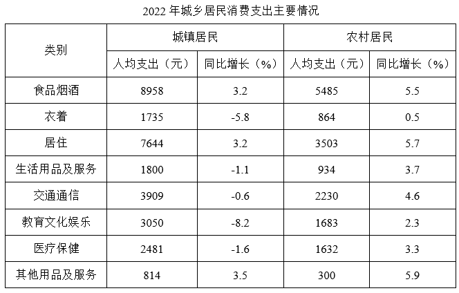
【选项】
A1
B2
C3
D4
听课笔记 / 决策路径：
【题目编号/题号】 ZL102 (172-3)书本第 171 172 页
【考点标签】 一般增长率比较；综合资料
【材料】
2021年12月，我国原煤产量3.8亿吨，同比增长7.2%；原油产量1647万吨，同比增长1.7%；天然气产量192 亿立方米，同比增长2.3%；发电量7234亿千瓦时，同比下降2.1%。
【题干】
将我国主要能源按2021年产量的同比增速从高到低排列，正确的是：
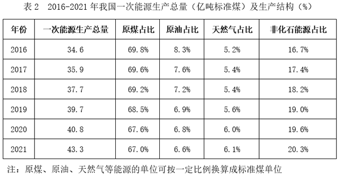
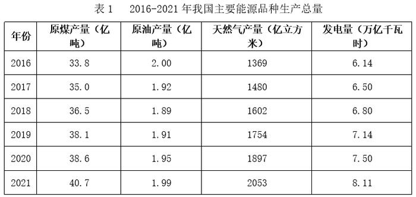
【选项】
A电>天然气>原煤>原油
B天然气>电>原煤>原油
C电>原油>天然气>原煤
D天然气>原油>电>原煤
听课笔记 / 决策路径：
【题目编号/题号】 ZL106 (176-17)书本第 175 176 页
【考点标签】 一般增长率；综合资料
【材料】
2021年1-2月，J省发电量为167亿千瓦时，其中风力发电量为17.4亿千瓦时。
【题干】
2021年1-2月J省累计发电量同比增速比同期风力发电量同比增速：
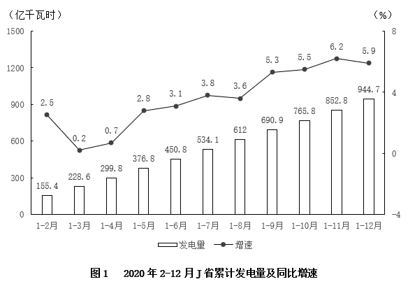
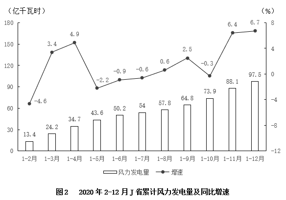
【选项】
A高不到10个百分点
B低不到10个百分点
C高10个百分点以上
D低10个百分点以上
听课笔记 / 决策路径：
【题目编号/题号】 ZL110 (187-8)书本第 185 186 187 页
【考点标签】 年均增长率；综合资料
【材料】
增加森林面积、提高森林质量、提升生态系统碳汇增量，将为我国实现碳达峰、碳中和目标、维护全球生 态安全做出巨大贡献。1973年，我国开展了第一次森林资源清查。目前已完成第9次森林资源清查，我国森林 面积和森林蓄积量连续30年保持“双增长”。“十三五”时期，我国累计造林5.45亿亩，森林覆盖率达到 23.04%，森林蓄积量为175.6亿立方米，森林面积达到2.2亿公顷（1公顷为15亩）。湿地保护率达到52%，治理 沙化土地1.5亿亩。
【题干】


2016-2018年，我国国际重要湿地面积的年均增长率约为（ ）。
【选项】
A25%
B30%
C35%
D40%
听课笔记 / 决策路径：
【题目编号/题号】 ZL111 (188-13)书本第 188 189 页
【考点标签】 一般增长率比较；综合资料
【材料】
2020年，我国平均每个国际重要湿地面积同比增幅最大的年份是2020年
【题干】


2017-2020年全国农村人均可支配收入增长最慢的年份是：
【选项】
A2017
B2018
C2019
D2020
听课笔记 / 决策路径：
【题目编号/题号】 ZL113 (190-19)书本第 189 190 页
【考点标签】 一般增长率；综合资料
【材料】
截至2024年底，城乡居民基本医疗保险参保94713.73万人，收入11180.91亿元，支出10661.49亿元。
【题干】

2013~2023年间，城乡居民医疗保险收入个人缴费收入同比增速超过20%的年份有几个？
【选项】
A5
B6
C7
D8
听课笔记 / 决策路径：
【题目编号/题号】 ZL123 (201-18)书本第 200 201 页
【考点标签】 基期平均数；综合资料
【材料】
2020年1~12月，中国新能源汽车市场共计72家动力电池企业实现装车配套，其中排名前3家、前5家、前10 家的企业动力电池装车量分别占总装车量的71.3%、82.1%和91.8%。
【题干】


2019年12月，我国插混客车的日均动力电池装车量约为（ ）。
【选项】
A2.4MWh
B2.6MWh
C2.8MWh
D3.1MWh
听课笔记 / 决策路径：
【题目编号/题号】 ZL126 (209-4)书本第 208 209 页
【考点标签】 一般增长率；综合资料
【材料】
2019年12月31日，中国共产党党员总数为9191.6万名，同比增长1.46%。在党员的性别、民族和学历 上，女党员2559.9万名，少数民族党员680.3万名，大专及以上学历党员4661.5万名。在党员的入党时间上，新 中国成立前入党的17.4万名，新中国成立后至党的十一届三中全会前入党的1550.9万名，党的十一届三中全会 后至党的十八大前入党的6127.7万名，党的十八大以来入党的1495.6万名。在党员的职业上，工人（含工勤技 能人员）644.5万名，农牧渔民2556.1万名，企事业单位、社会组织专业技术人员1440.3万名，企事业单位、社 会组织管理人员1010.4万名，党政机关工作人员767.8万名，学生196.0万名，其他职业人员710.4万名，离退休 人员1866.1万名。 2019年共发展党员234.4万名，比上年增长14.06%。其中，发展女党员99.4万名，占42.4%；发展少数民族 党员23.6万名，占10.1%；发展35岁及以下党员188.3万名，占80.3%；发展具有大专及以上学历的党员106.8万 名，占45.6%。发展党员的职业上，工人（含工勤技能人员）14.3万名，企事业单位、社会组织专业技术人员 31.6万名，企事业单位、社会组织管理人员25.3万名，农牧渔民42.4万名，党政机关工作人员13.4万名，学生 84.4万名，其他职业人员22.9万名。
【题干】
截至2019年12月31日，55岁以上党员人数比46岁以下党员人数：
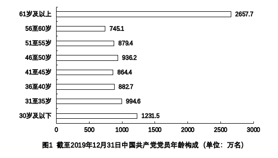
【选项】
A多14.36%
B少14.36%
C多16.76%
D少16.76%
听课笔记 / 决策路径：
【题目编号/题号】 ZL128 (215-4)书本第 214 215 页
【考点标签】 增长量比较；综合资料
【材料】
2021年1-2月，全国进口天然气2080万吨，同比增长17.4%。中国天然气进口金额为7312.1百万美元，同比 增长3.8%。
【题干】

2020年下半年，天然气产量同比增量超过10亿立方米的月份有几个？
【选项】
A1
B2
C3
D4
听课笔记 / 决策路径：
【题目编号/题号】 ZL131 (217-12)书本第 217 页
【考点标签】 一般增长率；综合资料
【材料】（无文本材料，见题干配图）
【题干】


2016-2022年期间，我国A股市场新上市公司的首次募资金额同比增长超过15%的年份有：
【选项】
A3个
B4个
C5个
D6个
听课笔记 / 决策路径：
【题目编号/题号】 ZL136 (225-14)书本第 224 225 页
【考点标签】 现期平均数；综合资料
【材料】
2023年，我国铁路客运创历史最好水平，服务保障国家重大战略成效显著旅客运输。国家铁路旅客发送量 完成36.85亿人，比上年增加20.75亿人；国家铁路旅客周转量（旅客周转量=旅客发送量×旅客平均运送距离） 完成14717.12亿人公里，比上年增加8145.36亿人公里。
【题干】
在2020~2023年间，国家铁路旅客平均运送距离量最短的年份是（ ）。
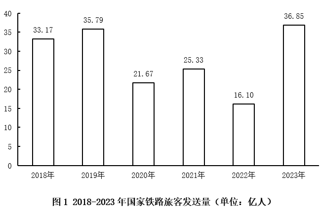
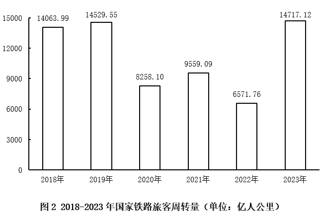
【选项】
A2020年
B2021年
C2022年
D2023年
听课笔记 / 决策路径：
【题目编号/题号】 ZL138 (230-6)书本第 229 230 页
【考点标签】 年均增长率；综合资料
【材料】
2021年，各地区各部门全面落实党中央、国务院关于实现数字乡村发展战略的决策部署，积极引入社会资 本投资建数字乡村。2021年全国用于县域农业农村信息化建设的社会资本投入为954.6亿元，县均社会资本投入 3588.8万元、乡村人均社会资本投入135.2元，分别比上年增长17.2%和24.0%。分区域看，东部地区社会资本投 入562.4亿元，占全国社会资本投入58.9%；中部地区社会资本投入193.8亿元；西部地区社会资本投入198.4亿 元。
【题干】


2019-2021年，全国县域农业农村信息化建设县均社会资本投入的年均增率约为（ ）。
【选项】
A10%
B21%
C32%
D43%
听课笔记 / 决策路径：
【题目编号/题号】 ZL139 (231-8)书本第 229 230 231 页
【考点标签】 现期倍数；综合资料
【材料】（材料同上，见本组上一题）
【题干】
2021年，东部地区县域农业农村信息化建设社会资本投入约是中、西部地区之和的（ ）倍。
【选项】
A1.43
B1.64
C1.80
D1.95
听课笔记 / 决策路径：
【题目编号/题号】 ZL140 (231-9)书本第 229 230 231 页
【考点标签】 一般增长率比较；综合资料
【材料】（材料同上，见本组上一题）
【题干】
2021年，关于县域农业农村信息化建设，下列数据同比增长率最大的是（ ）。
【选项】
A东部地区县均社会资本投入
B东部地区乡村人均社会资本投入
C西部地区县均社会资本投入
D西部地区乡村人均社会资本投入
听课笔记 / 决策路径：
【题目编号/题号】 ZL141 (232-14)书本第 231 232 页
【考点标签】 现期倍数；综合资料
【材料】
2021年，全国城市供水总量673.34亿立方米，同比增长6.96%；城市供水管道长度105.99万公里，同比增长 5.26%；人均日生活用水量185.03升；供水普及率99.38%，比上年增加0.39个百分点。天津、河北、上海、江 苏、浙江和广东6个省（市）城市供水普及率达到100%；福建、山东、湖北、广西、安徽、辽宁、宁夏、新 疆、内蒙古、山西、甘肃、河南、黑龙江、江西、云南和湖南16个省（区）超过99%（含）；西藏、青海、北 京、四川、贵州和陕西6个省（区、市）超过98%；重庆、吉林、海南3个省（市）和新疆建设兵团超过95%。
【题干】
图2中，城市人均日生活用水量最高的省份是用水量中位数省份的约：
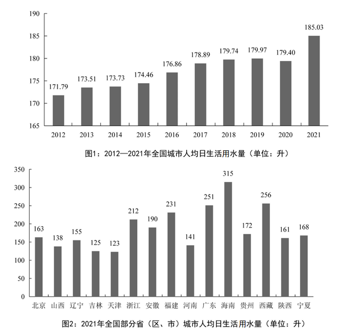
【选项】
A1.78倍
B1.88倍
C1.95倍
D2.03倍
听课笔记 / 决策路径：
【题目编号/题号】 ZL142 (233-16)书本第 233 234 页
【考点标签】 现期倍数；综合资料
【材料】
五年来，我国积极推进网络强国和数字中国建设，着力深化数字经济与实体经济融合，为打造数字经济新 优势、增强经济发展新动能提供有力支撑。2022年，我国电信业务收入累计完成1.58万亿元，比上年增长8%， 较2018年增长超2800亿元。 2022年移动数据流量业务收入6397亿元，比上年增长0.3%，在电信业务收入中占比约为40.5%。数据中 心、云计算、大数据、物联网等新兴业务快速发展，对我国电信业务拉动作用持续增强。2022年新兴业务收入 达3072亿元，在电信业务收入中占比由上年的16.1%提升至19.4%。其中，数据中心、云计算、大数据、物联网 业务比上年分别增长11.5%、118.2%、58%和24.7%。
【题干】
2022年我国电信业务收入约为2018年的（ ）倍。
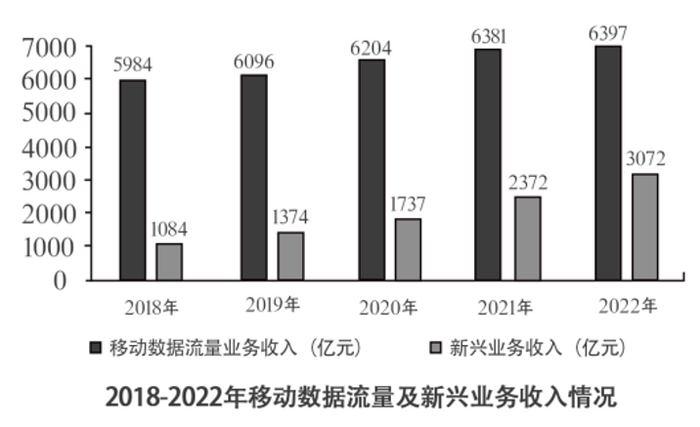
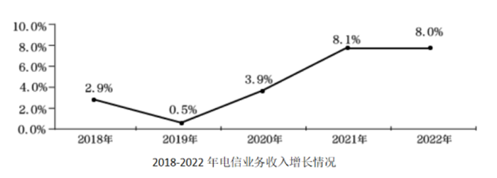
【选项】
A1.1
B1.2
C1.3
D1.4
听课笔记 / 决策路径：
【题目编号/题号】 ZL144 (236-7)书本第 236 页
【考点标签】 现期倍数；综合资料
【材料】
2019年，我国快递业务量为635.2亿件，其中东部、中部、西部地区分别完成业务量506.3亿件、81.9亿件和 47亿件。全年快递业务收入7497.8亿元，其中东部、中部、西部地区的业务收入所占比重分别为80.2%、11.3% 和8.5%。东部、中部、西部地区业务收入占全国比重分别比上年上升0.2个百分点、上升0.1个百分点和下降0.3 个百分点。 2016-2018年，我国快递业务收入分别为3974.4亿元、4957.1亿元、6038.4亿元。
【题干】
2019年，中部地区平均每件快递产生的快递业务收入约是西部地区的多少倍？
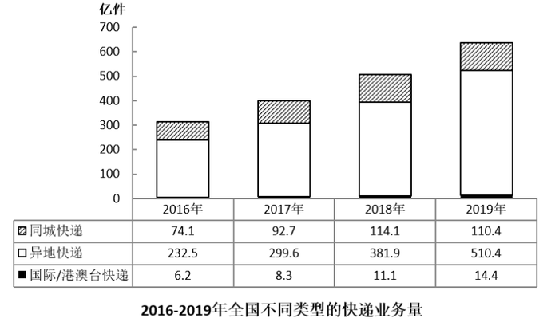
【选项】
A0.5
B0.8
C1.3
D2.1
听课笔记 / 决策路径：
【题目编号/题号】 ZL145 (238-12)书本第 238 页
【考点标签】 一般增长率；综合资料
【材料】（无文本材料，见题干配图）
【题干】
与2009年相比，2019年城镇非私营单位就业人员平均工资增长的倍数约为：
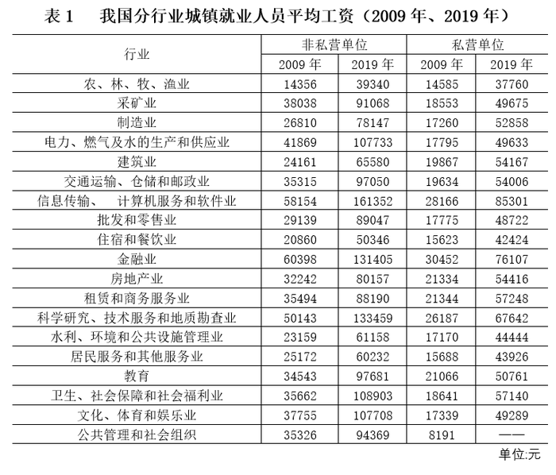
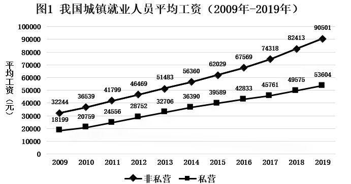
【选项】
A1.5倍
B1.8倍
C2.8倍
D3.2倍
听课笔记 / 决策路径：
【题目编号/题号】 ZL146 (240-19)书本第 239 240 页
【考点标签】 现期平均数；综合资料
【材料】（无文本材料，见题干配图）
【题干】
2019年棉花种植面积排名前7的省区中，棉花单产超过1吨/公顷的省区有几个？
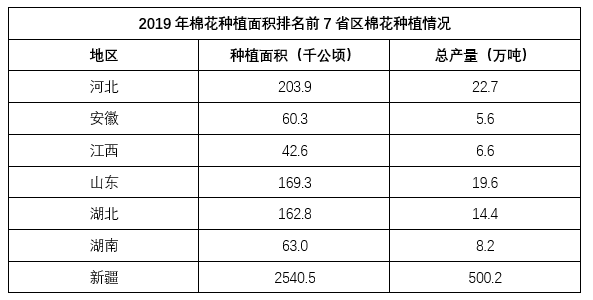
【选项】
A5
B4
C3
D2
听课笔记 / 决策路径：
【题目编号/题号】 ZL147 (242-9)书本第 241 242 页
【考点标签】 一般增长率比较；综合资料
【材料】
2019年，A市居民人均可支配收入28920元，比上年增长9.6%。按常住地分，城镇居民人均可支配收入 37939元；农村居民人均可支配收入15133元。全市居民人均消费支出20774元，比上年增长7.9%。按常住地 分，城镇居民人均消费支出25785元；农村居民人均消费支出13112元。全市居民恩格尔系数为32.1%，比上年 下降0.2个百分点。其中城镇为31.2%，农村为34.9%。
【题干】

将2019年A市①工伤保险、②生育保险和③失业保险按参保人数同比增速从高到低的顺序排列，以下正确的是：
【选项】
A①②③
B①③②
C②③①
D②①③
听课笔记 / 决策路径：
【题目编号/题号】 ZL149 (243-14)书本第 243 244 页
【考点标签】 现期倍数；综合资料
【材料】
2019年，1043.0万残疾儿童及持证 残疾人得到基本康复服务，其中包括0～6岁残疾儿童18.1万人。 截至2019年末，全国已竣工的各级残疾人综合服务设施2341个，总建设规模584.5万平方米，总投资183.1 亿元；已竣工各级残疾人康复设施1006个，总建设规模414.2万平方米，总投资132.2亿元。
【题干】


截至2019年末，全国平均每个已竣工的残疾人综合服务设施建设规模约是已竣工残疾人康复设施的多少倍？
【选项】
A0.6
B0.8
C1.2
D1.7
听课笔记 / 决策路径：
【题目编号/题号】 ZL151 (245-17)书本第 245 页
【考点标签】 一般增长率比较；综合资料
【材料】
2019年，我国电信业务收入累计完成金额1.31万亿元，固定通信业务收入完成4161亿元，同比增长9.5%， 在电信业务收入中所占比重较上年提高2.6个百分点；移动通信业务实现收入8942亿元，同比减少2.9%。 2014~2019年，全国移动电话4G及非4G基站数变化情况如下图所示：
【题干】

2015~2019年，移动电话基站总量同比增速最快的年份是：
【选项】
A2015年
B2016年
C2017年
D2019年
听课笔记 / 决策路径：
【题目编号/题号】 ZL154 (247-2)书本第 246 247 页
【考点标签】 一般增长率；综合资料
【材料】
2019年间，4G基站数同比增速和增量最大的年份不是同一个 截止2022年12月，我国网民规模约为10.67亿，较2021年12月新增网民约3549万，互联网普及率达75.6%， 较2021年12月提升2.6个百分点。我国网民使用手机上网的比例达99.8%，较2021年12月增加0.1个百分点；使用 电视上网的比例为25.9%；使用台式电脑、笔记本电脑、平板电脑上网的比例分别为34.2%、32.8%和28.5%。我 国城镇网民规模约为7.59亿，占网民整体的71.1%，农村网民规模约为3.08亿，较2021年12月增长约2371万，占 网民整体的28.9%。 2022年12月，20-29岁、30-39岁、40-49岁网民占比分别为14.2%、19.6%和16.7%；50岁及以上网民群体占 比由2021年12月的26.8%提升至30.8%，互联网进一步向中老年群体渗透。 2022年12月，线上办公用户规模约达5.4亿，较2021年12月增加7078万户，占整体网民的50.6%。互联网医 疗用户规模约达3.63亿，较2021年12月增加约6466万，占网民整体的34%。农村地区在线教育和互联网医疗用 户分别占农村网民整体的31%和21.5%，较上年分别增加2.7%和4.1%。
【题干】
截至2022年12月，我国城镇网民规模同比增速约为：
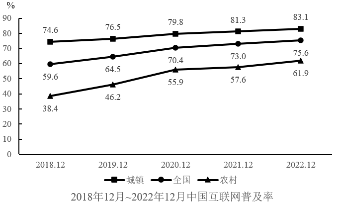
【选项】
A1.2%
B1.6%
C2.0%
D2.4%
听课笔记 / 决策路径：
【题目编号/题号】 ZL155 (247-3)书本第 246 247 页
【考点标签】 增长量计算；综合资料
【材料】（材料同上，见本组上一题）
【题干】
2019-2022年，当年12月我国城镇与农村互联网普及率同比增量相差在1个百分点以内的年份有几个？
【选项】
A1
B2
C3
D4
听课笔记 / 决策路径：
【题目编号/题号】 ZL160 (253-4)书本第 252 253 页
【考点标签】 一般增长率；综合资料
【材料】（无文本材料，见题干配图）
【题干】
假设羊肉每年以零售价格全部售罄，那么，2021年羊肉销售收入同比增长约：
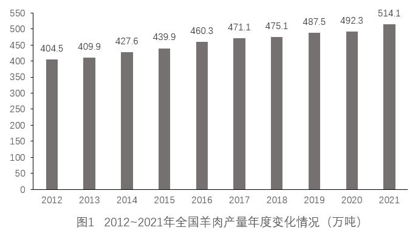
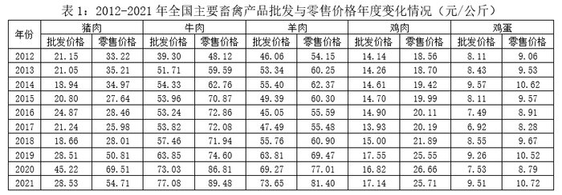
【选项】
A5.2%
B10.4%
C17.6%
D22.7%
听课笔记 / 决策路径：
【题目编号/题号】 ZL161 (255-7)书本第 254 255 页
【考点标签】 平均数增长量；综合资料
【材料】
2022年，我国废钢铁、废有色金属等十个品种（详见表格）再生资源回收总重量约为37067.7万吨，同比下 降2.62%，回收总金额约为13140.6亿元，同比下降4.05%。2022年废有色金属中废铅回收重量同比增长5.56%。 2022年我国报废机动车回收数量399.1万辆，同比增长32.9%，回收数量占我国机动车保有量的9.57‰。
【题干】


相比2021年，2022年我国废纸平均回收价格（平均回收价格 ）：
【选项】
A下调约170元/吨
B下调约347元/吨
C上调约170元/吨
D上调约347元/吨
听课笔记 / 决策路径：
【题目编号/题号】 ZL166 (260-4)书本第 256 260 页
【考点标签】 现期平均数；综合资料
【材料】
据国家统计局数据显示，2021年我国研究与试验发展（R&D）经费支出27864亿元，同比增长14.2%，占国 内生产总值之比为2.44%，其中基础研究经费1696亿元。国家自然科学基金共资助4.87万个项目。2021年全年授 予专利权460.1万件，同比增长26.4%；PCT专利申请受理量7.3万件。截至2021年末，有效专利1542.1万件，其 中境内有效发明专利270.4万件。每万人口高价值发明专利拥有量7.5件。全年商标注册773.9万件，同比增长 34.3%。全年共签订技术合同67万项，技术合同成交金额37294亿元，同比增长32.0%。
【题干】


2017~2021年，我国研究与试验发展经费支出超过年平均值的年份的个数是：
【选项】
A1个
B2个
C3个
D4个
听课笔记 / 决策路径：
【题目编号/题号】 ZL169 (262-12)书本第 262 263 页
【考点标签】 一般增长率；综合资料
【材料】
实现利润总额10676 亿元，同比增长7.8%；人均实现业务收入115.8万元，同比增长8.6%。 分领域看，2020年，软件产品实现收入22758亿元，同比增长10.1%；其中，工业软件产品实现收入1974亿 元，增长11.2%。信息技术服务实现收入49868亿元，比上年同期增加6579亿元；其中，电子商务平台技术服务 收入9095亿元，同比增长10.5%；云服务、大数据服务共实现收入4116亿元，同比增长11.1%。信息安全产品和 服务实现收入1540亿元，同比增长10.0%，增速较上年回落2.4个百分点。嵌入式系统软件实现收入7492亿元， 比上年同期增加803亿元，增速较上年提高4.2个百分点。
【题干】
2014~2020年，我国软件和信息技术服务业完成业务收入同比增速超过15%的年份有几个？
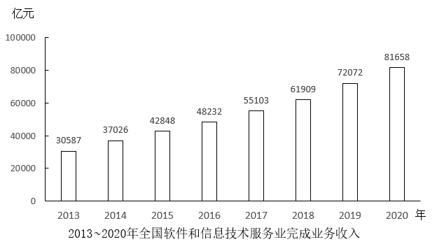
【选项】
A2
B3
C4
D5
听课笔记 / 决策路径：
【题目编号/题号】 ZL171 (265-1)书本第 265 266 页
【考点标签】 现期倍数；综合资料
【材料】
2022年上半年，我国软件与信息技术服务业总收入同比增长10.9%，增速较1~5月份提高0.3个百分点。软件 与信息技术服务业收入中，软件产品收入、信息技术服务收入、信息安全收入、嵌入式系统软件收入同比分别 增长10.2%、12%、11.4%和5%。信息技术服务收入中，云计算、大数据服务收入4790亿元，同比增长9.3%；集 成电路设计收入1279亿元，同比增长15.2%。 2022年上半年，我国东部、中部、西部、东北地区完成软件与信息技术服务业总收入同比增速分别为 10.2%、14.4%、15.9%和6.3%。
【题干】

2022年二季度，我国中部地区软件与信息技术服务业总收入约是东北地区的：
【选项】
A不到2倍
B2~3倍之间
C3~4倍之间
D4倍以上
听课笔记 / 决策路径：
【题目编号/题号】 ZL178 (271-17)书本第 270 271 页
【考点标签】 现期平均数；综合资料
【材料】
2024年2月，我国公共充电桩数量为282.6万台，环比增加4.4万台，同比增长51.3%。其中直流充电桩123.9 万台，环比增长2.1%；交流充电桩158.6万台，环比增长1.2%。
【题干】


2023年下半年，我国月均新增公共充电桩约多少万台？
【选项】
A6.5
B7.9
C8.8
D9.6
听课笔记 / 决策路径：
【题目编号/题号】 ZL182 (275-11)书本第 274 275 页
【考点标签】 增长量计算；综合资料
【材料】
2019年全国房地产开发投资132194亿元，比上年增长9.9%，增速比上年加快0.4个百分点。其中，住宅投资 97071亿元，增长13.9%，增速比上年加快0.5个百分点。2019年，全国商品房销售面积171558万平方米，比上年 下降0.1%。其中，住宅销售面积增长1. 5%，办公楼销售面积下降14.7%，商业营业用房销售面积下降15.0%。 商品房销售额159725亿元，增长6. 5%，增速比上年回落5.7个百分点。其中，住宅销售额增长10.3%，办公楼销 售额下降15.1%，商业营业用房销售额下降16.5%。
【题干】
2018年全国房地产开发投资比上年增长：
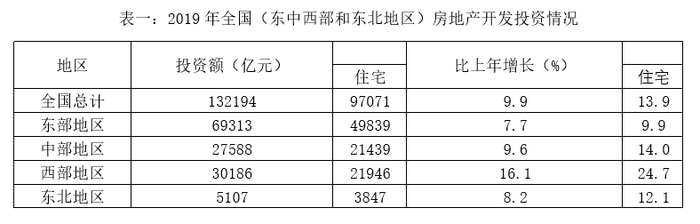
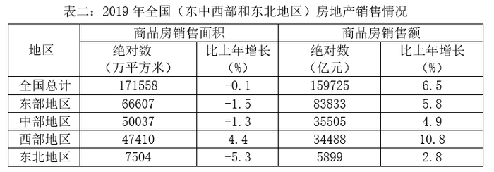
【选项】
A48114亿元
B11427亿元
C10436亿元
D10278亿元
听课笔记 / 决策路径：